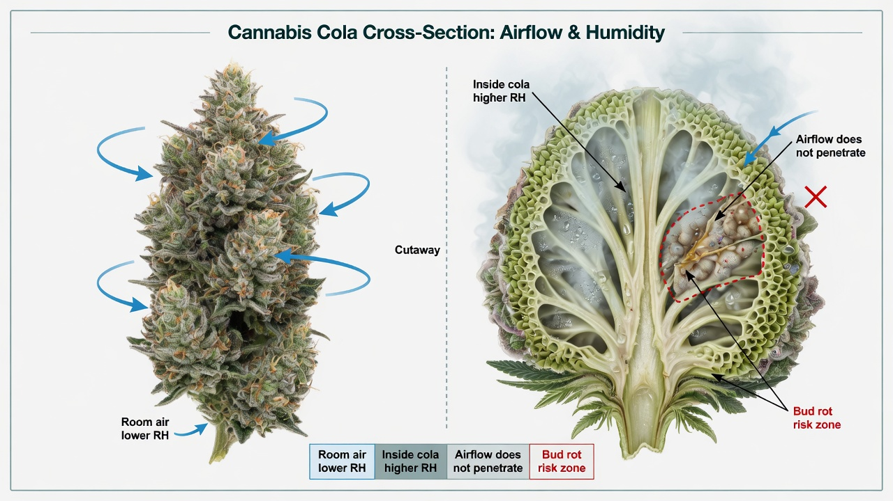
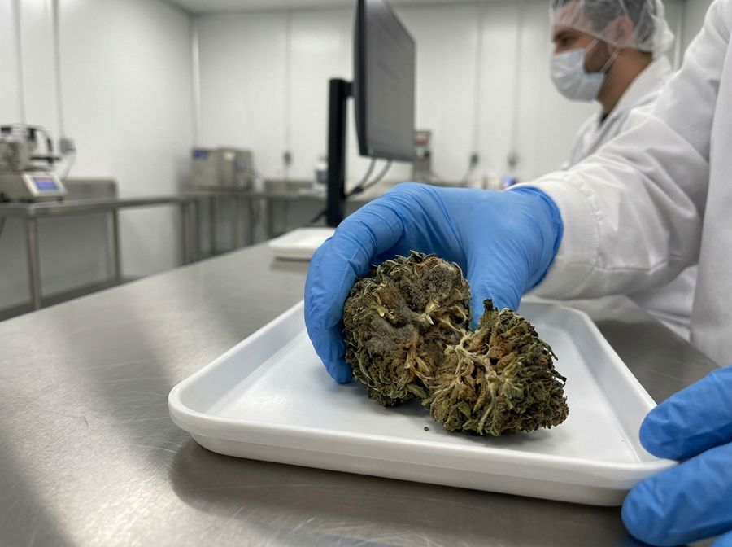
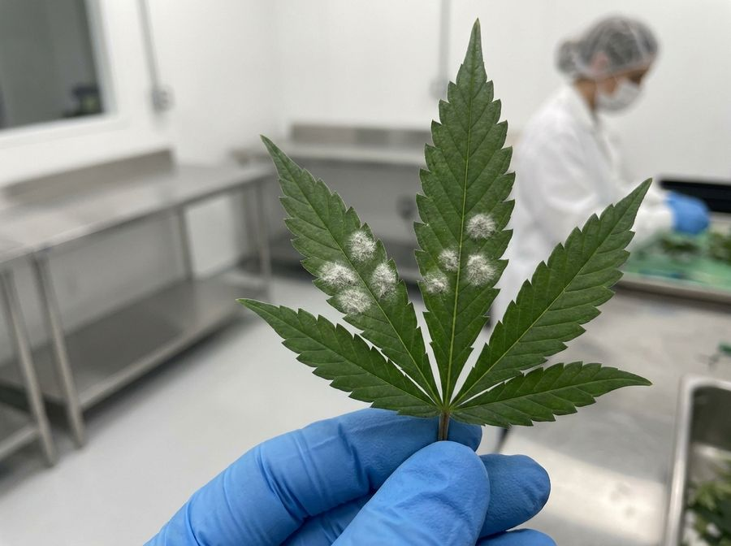
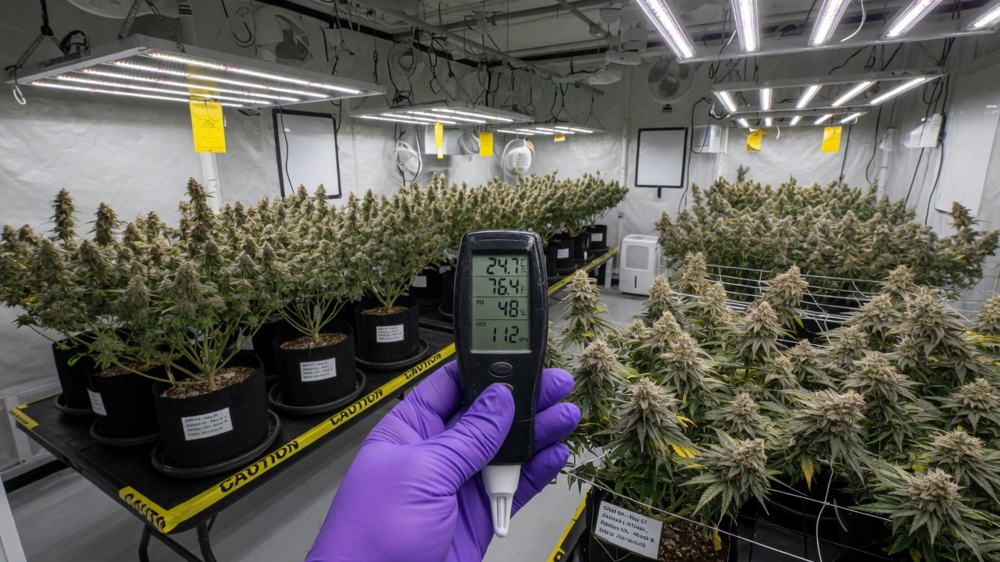

Mold risk: how to prevent and stop bud rot
Mold is the disease with the highest risk of damage to all the crop in the last weeks. It can also make your flower dangerous to use. This paper shows the conditions that mold must have, how to prevent these conditions, and the procedure to use immediately when you find mold.
Purpose and scope
You can do all the tasks correctly for ten weeks, and then in the last two weeks gray mold causes damage to all the crop. Mold increases most quickly in warm air with a high humidity and in a canopy with a high density of flowers. The same conditions also make large buds. The mold is most dangerous in the inner part of the bud. You cannot see the mold there until it increases in size.
There is also a risk to health. One set of claims data shows that persons who use cannabis have fungal infections approximately 3.5× more frequently than persons who do not use cannabis. The absolute rates are small, and persons with a weak immune system have the highest risk[8]. Some molds make mycotoxins that stay in the flower after drying[9].
The mold risk is not only about yield. It is also about safe medicine. It is not necessary to know about mold before you read this paper. The paper gives the definition of each term.
Definitions



Evidence and limitations
We want each paper to be correct. Thus we examine each paper for information that is not solid. This information comes from the view of one grower, from a small number of sources, or from grower methods that have no controlled test. We identify this information, and we do not show it as solid.
Frequently there is no paper for the decision that you must make. Then we use the reports of other growers and the methods that work in the rooms that we know. This information can help you, but it is not the result of a laboratory test. Use the methods that work for your plants, for your room and for your meters. If a table does not agree with your crop, use the data from your crop and record the difference.
- Botrytis occurs more frequently when the humidity is high, the tissue has a high density and the air exchange is low.
- The RH in the canopy can be higher than the readings of the room sensors.
- Procedures to decrease the RH in steps in the last stage of flowering, and procedures to put a bag on the rot and cut it.
- One RH range of 60 to 70% in flowering as a safe target for the last stage of flowering.
- Values of relative risk from claims data, with no absolute rates. The group of persons with a weak immune system stays at high risk.
If you find an error, make a report. We will correct it. Make the report on GitHub, with the name of the paper and the information that is incorrect. If you have a source, include it: Make a report of an accuracy problem. The regulations, labels and licenses of your area always override each procedure in these papers. The label weak in a paper shows the points where the risk of an error is highest.
Frequent mold diseases of cannabis
Bud rot starts deep in a cola with a high density, frequently at a stem or where a leaf attaches to the bud. One leaf has a yellow or brown color, and you can pull it from the bud easily. The inner part of the bud is gray and soft, and it breaks into small pieces. Bud rot increases quickly in the last weeks[1].
PM makes white areas of powder on the top of the leaves. You can rub the leaf to remove the powder, but then the powder is on the leaf again. PM is most frequent at moderate temperatures, and in air with a high humidity that does not move. PM makes a layer on the leaves and decreases photosynthesis[3].
Cannabis in grow rooms can also have Penicillium, Cladosporium, Fusarium and Aspergillus[10]. Botrytis and PM are the two species that you will see first and most frequently.

Conditions that help mold
Bud rot does not occur at random. It must have a set of conditions. The humidity is more than approximately 70%, the temperatures are moderate (approximately 17–24 °C (63–75 °F)), and there is free moisture on the surfaces of the plant. The air also does not move[2]. If you remove one of these conditions, you prevent the mold.
If the canopy has a high density and no defoliation, warm air with a high humidity stays in the canopy. The air does not move, and the microclimate is much wetter than the reading of the room sensor[1]. If you put the plants near each other to increase the yield, the risk of rot increases. Defoliation and space between the plants are good methods to control mold. They change the airflow and the humidity of the canopy.
How to prevent mold each day
To prevent mold, do a small number of easy tasks with the same procedure each time:
- 1Keep the humidity lowKeep the RH in flowering at approximately 45–65%, with a value that is correct for the stage. In the middle and last parts of flowering, the value is frequently approximately 45–55%. Use a lower value in the last part. Select a size for the dehumidifier that is correct for the transpiration load[4].
- 2Move air through the canopyMake a weak airflow with turbulence. Make the air move at approximately 0.5–1.0 m/s in the plants and not only above the canopy[4]. Read the airflow paper.
- 3Open the canopyDefoliate the plants and make space between the plants. Thus air and light go into the canopy. A high plant density increases the other risks, and you cannot see this effect.
- 4Prevent free moistureDo not apply water from above and do not spray the plants in flowering. Prevent condensation at lights-off. Do not let the temperature decrease by a large quantity. Then the surface temperatures stay higher than the dew point.
- 5Keep the room cleanSanitize the tools, the surfaces and your hands. Use a HEPA filter on the air that comes into the room. Thus the number of spores in the air decreases[4].
- 6Scouting each dayIn the last weeks, examine the plants each day. If you find one bud with rot at the first stage, you can prevent damage to all the other buds.
Scouting to find mold at the first stage
Each day in the last part of flowering, use a bright light for five minutes. Look into the plants and not only at the plants:
- The first sign. One leaf blade comes out of a bud. The leaf is yellow or brown, and you can pull it from the bud easily. Pull the leaf from the bud, and examine the bud below it for gray mold.
- Where to look. Examine the largest colas at the top, which have the highest density. Examine the positions where a leaf petiole goes into the bud. Examine all the positions where the airflow is weak.
- Powdery mildew. White powder on the top surfaces of the leaves. You can rub the leaf to remove the powder.
- Smell the plants. Before you can see the rot, the plants can smell of mold, smell of hay, or smell different from usual.
Procedure when you find mold
- 1Stop and contain the moldDo not move air onto the mold. Put a bag around the bud with rot. Cut the stem at a large distance below the rot. Remove the bag from the room before you open the bag.
- 2Cut a large areaThe area of bud rot in the bud is larger than the area that you can see. Remove the full bud with rot and some tissue in good condition around it.
- 3SanitizeClean your tools and your hands before you touch a different plant. Spores can move on tools, surfaces and hands.
- 4Remove the causeWhen you find rot, the conditions of humidity, airflow or density are not correct. Decrease the RH. Make more airflow through the canopy. Open the canopy.
- 5Think about the time of harvestIf the rot increases quickly in the last part of flowering, harvest the clean material before the usual time. This harvest can be better than damage to all the crop.
A bud with rot is waste. Drying decreases the quantity of microbes, but it does not remove the rot or the mycotoxins[7]. No procedure makes the bud safe to use.
How to prevent mold during drying and storage
Mold can occur in clean flower during a drying procedure that is not correct, or in storage. The protection is to decrease the quantity of available water:
- Dry the flower in controlled conditions: cool and moderate, with airflow. Drying decreases the number of yeasts and molds by a large quantity[7].
- Cure and keep the flower dry. Make the water activity low and stable. A cure at approximately 18 °C (64 °F) and approximately 50–55% RH is a target with a source in the literature[6].
- Glass is better than plastic. Sealed glass jars give better results than bags: they keep the quantity of microbes low and the cannabinoids stable[7].
Limits of a visual inspection for mold
Flower can have dangerous fungi when it looks clean, smells clean, and also when a test shows that it is clean. A standard test for mold with a culture cannot always find some Aspergillus that make mycotoxins[5]. The rates of contamination in commercial products are high, and the regulations are not the same[9].
The tasks to prevent mold in the grow room are your primary protection for safety. A laboratory test is a second protection. It has limits, and it does not make you sure that the flower is safe. For persons who are at high risk, cannabis with mold is a risk to health[8]. Thus clean genetics (read tissue culture) and a clean room are important from the first day.
Troubleshooting
| Symptom | Possible cause | Correction |
|---|---|---|
| The inner part of the bud is gray and soft, and it breaks into small pieces | Botrytis bud rot | Put a bag around the mold. Cut a large area. Remove the bag from the room. Sanitize the tools and your hands. Decrease the RH and increase the airflow. |
| White powder on the top of the leaves | Powdery mildew | Increase the airflow and decrease the RH. Remove the leaves with the most powder. Apply a treatment at the first stage[3] |
| Rot occurs in each crop cycle in the last part of flowering | A high humidity in the canopy for a long time, or plants with a high density | Use a dehumidifier with a larger capacity. Defoliate the plants. Make an airflow through the canopy. |
| Condensation at lights-off | Surfaces that become colder than the dew point when the temperature decreases at night | Make the temperature decrease by a smaller quantity at night. Keep the air in movement. |
| Mold in the jars after the cure | The flower is too wet when you put it in storage | Dry or cure the flower to decrease the water activity. Use sealed glass jars[6] |
Expected results and limitations
- Mold must have a set of conditions (humidity + air that does not move + density + moisture). If you remove one condition, you remove the risk.
- The mold is in the inner parts of the buds. When you can see it, the spores are in the air. Examine the plants each day in the last part of flowering.
- You cannot make flower with rot or mycotoxins safe after the damage occurs. No treatment removes mycotoxins or makes a bud with rot good again[7].
- Cannabis can have dangerous contamination when it looks clean, smells clean and a test shows that it is clean[5].
Mold risk is a result of your climate and your airflow. Read the systems paper and the airflow paper. They show how to remove the causes and not only the symptoms.
References
- Mahmoud M, BenRejeb I, Punja ZK, Buirs L, Jabaji S (2023). Understanding bud rot development, caused by Botrytis cinerea, on cannabis grown under greenhouse conditions. Botany / Can. J. Bot. 101(8). https://doi.org/10.1139/cjb-2022-0139
- Punja ZK, et al. (2025). The epidemiology and management of Botrytis cinerea causing bud rot on greenhouse-cultivated cannabis. Can. J. Plant Pathol. https://doi.org/10.1080/07060661.2025.2478250
- Scott C, Punja ZK (2021). Evaluation of disease management approaches for powdery mildew on Cannabis sativa L. Can. J. Plant Pathol. 43(3):394-412. https://doi.org/10.1080/07060661.2020.1836026
- Buirs L, Punja ZK (2024). Integrated management of pathogens and microbes in Cannabis sativa L. under greenhouse conditions. Plants 13:786. https://doi.org/10.3390/plants13060786
- McKernan K, Spangler J, Helbert Y, et al. (2016). Metagenomic analysis of medicinal cannabis samples. F1000Research 5:2471. https://pmc.ncbi.nlm.nih.gov/articles/PMC5089129/
- AL Ubeed HMS, Wills RBH, Chandrapala J (2022). Post-harvest operations to generate high-quality medicinal cannabis products: a systematic review. Molecules 27:1719. https://doi.org/10.3390/molecules27051719
- (2025). Post-harvest drying and curing affect cannabinoid contents and microbial levels in industrial hemp (Cannabis sativa L.). Plants 14(3):414. https://doi.org/10.3390/plants14030414
- Benedict K, Thompson GR, Jackson BR (2020). Cannabis use and fungal infections in a commercially insured population, United States, 2016. Emerg. Infect. Dis. 26(6):1308-1310. https://doi.org/10.3201/eid2606.191570
- Gwinn KD, Leung MCK, Stephens AB, Punja ZK (2023). Fungal and mycotoxin contaminants in cannabis and hemp flowers: implications for consumer health. Front. Microbiol. 14:1278189. https://doi.org/10.3389/fmicb.2023.1278189
- Punja ZK, Collyer D, Scott C, Lung S, Holmes J, Sutton D (2019). Pathogens and molds affecting production and quality of Cannabis sativa L. Front. Plant Sci. 10:1120. https://pmc.ncbi.nlm.nih.gov/articles/PMC6811654/
Each citation in the paper, for example [1], refers to an item in this list. Each item is a primary source or an instruction from an authority, unless the item shows a different type. The results of cannabis tissue culture change much with the genotype. Before you use the dilutions, hormone doses and local regulations, make sure that they agree with the primary sources.